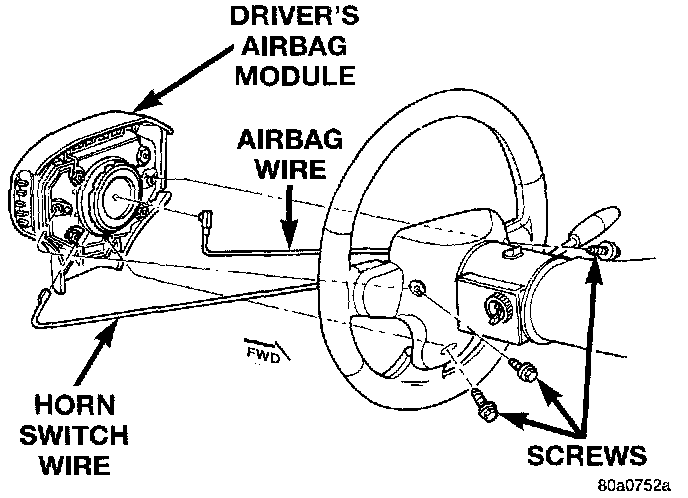
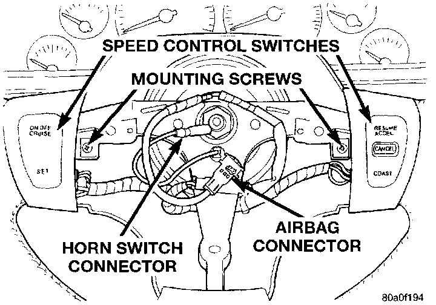
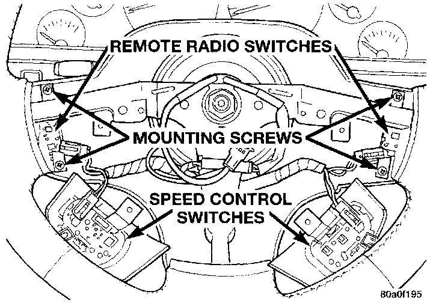

Remote Radio Switch
REMOVALWARNING: ON VEHICLES EQUIPPED WITH AIRBAGS, REFER TO AIR BAGS AND SEAT BELTS/AIR BAGS BEFORE ATTEMPTING STEERING WHEEL, STEERING COLUMN, OR INSTRUMENT PANEL COMPONENT DIAGNOSIS OR SERVICE. FAILURE TO TAKE THE PROPER PRECAUTIONS COULD RESULT IN ACCIDENTAL AIRBAG DEPLOYMENT AND POSSIBLE PERSONAL INJURY.
1. Disconnect and isolate the battery negative cable.
Driver Airbag Module Remove/Install:

2. Remove the three screws that secure the driver airbag module to the steering wheel.
3. Pull the airbag module away from the steering wheel far enough to unplug the airbag and horn switch wire harness connectors from the back of the airbag module.
4. Remove the airbag module from the steering wheel.
Speed Control Switches Remove/Install:

5. Remove the screws that secure the speed control switches to the steering wheel, and lower the switches from the steering wheel spokes.
Remote Radio Switches Remove/Install:

6. Remove the two screws that secure the [1][2]remote radio switch to the steering wheel spoke.
7. Unplug the wire harness connector from the [1][2]remote radio switch.
8. Remove the [1][2]remote radio switch from the steering wheel.
9. Reverse the removal procedures to install. Tighten the screws that secure the airbag module to the steering wheel to 10.2 N.m (90 in. lbs.).